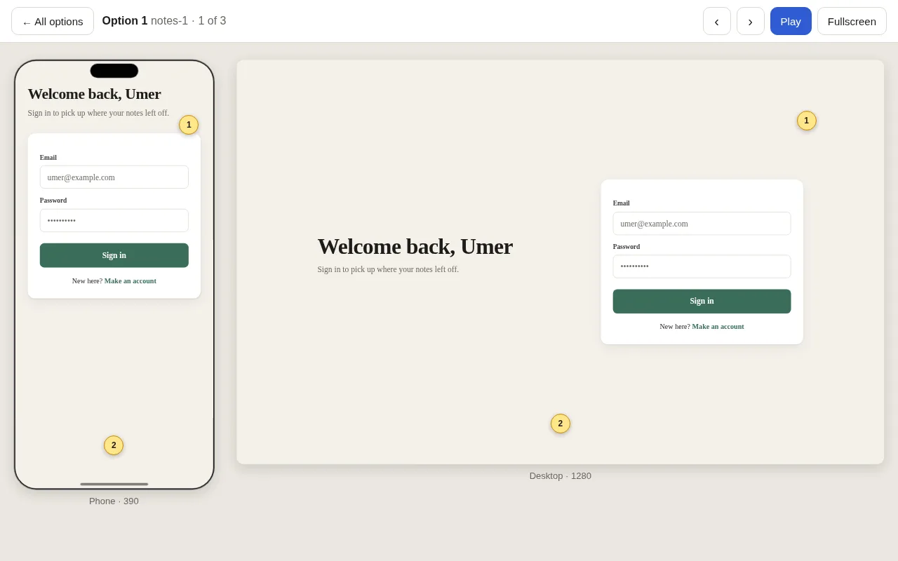
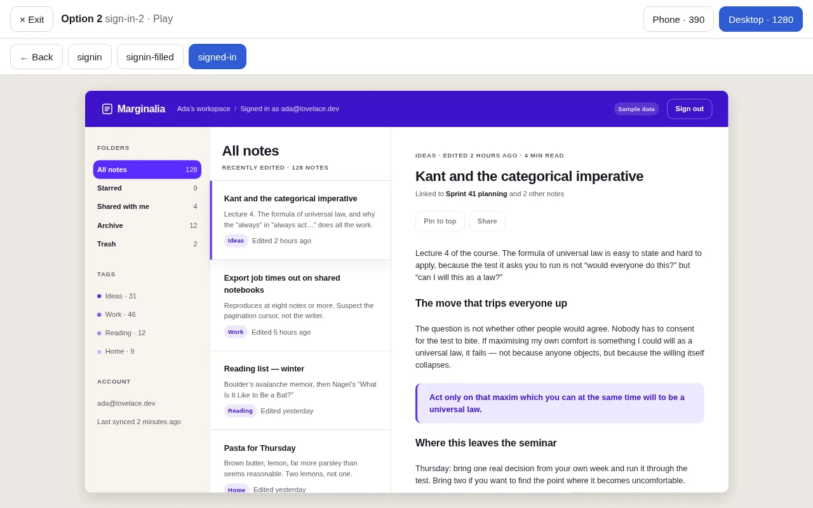
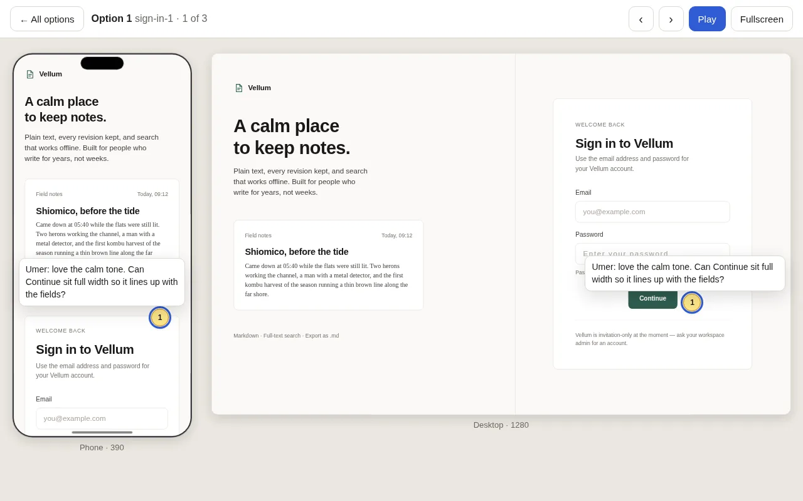

One prompt.
Several first drafts.
Generate self-contained HTML screens with the model you choose. Compare them at phone and desktop width, click through their screens, and read the comments people pinned on them.
Get started
From prompt to prototype
Make creates one to five options. View them side by side, explore each canvas at phone and desktop widths, and play through the screens. Pages load locally with no network.


